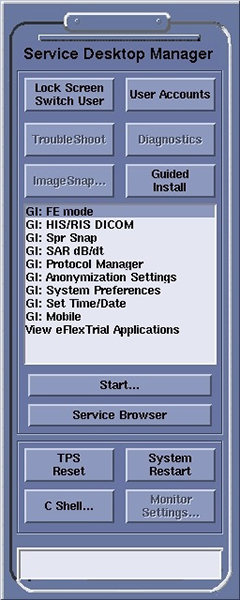
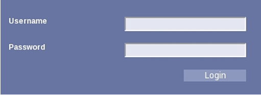
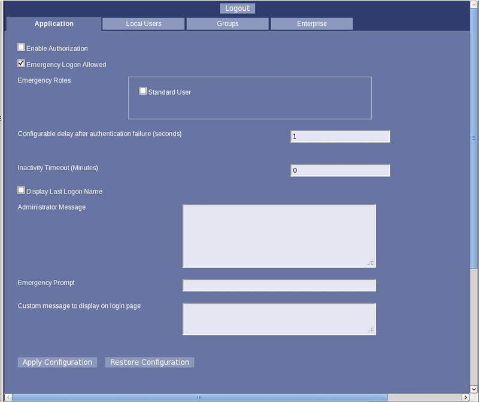
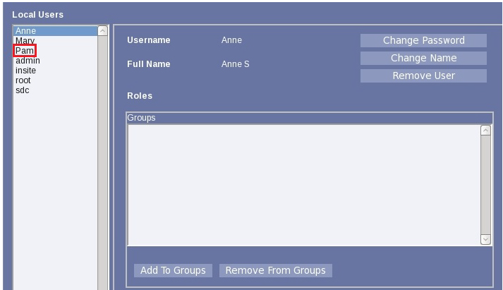

- 00000018WIA30615E20GYZ
- id_131061692.21
- Sep 8, 2022 9:10:36 PM
Data privacy
Learn more about the system's controlled access and data privacy protections.
GE Medical Systems has a longstanding reputation of providing customizable, clinical solutions to protect the privacy and security of organizations’ unique clinical workflows, as well as patients’ confidentiality.
The system can protect data privacy through controlled access. When system access is controlled, the HIPAA logon screen shows, and all users must use a password to log on. Different levels of security are available, which can block access at multiple points. We recommend that the site collaborate with the service representative who will set security levels during software installation. It is not possible to change HIPAA security settings in the Guided Install without reinstalling the software.
At installation, a default "sdc" account is provided. The site can use this shared account or create accounts for each user. If the site uses the default account, we strongly recommend that the site change the default password.
Permissions
Data Privacy contains the following permissions:
- Administrative User - can add and delete users
- Other Users - can log on to the system, use the system, and change the password
Administrative options
The site should assign an administrative user to further customize the security settings. The administrative user can:
- Create a unique account for each user
- Delete/lock accounts, such as the default sdc account
- Enable/disable an Emergency Logon feature that allows a user to log on without a password
- Set an inactivity timeout to automatically lock the screen
- Set the password complexity rules
- Assign which users can use certain features
Users and groups
Every person who has permission to use the system is a user. Users are set up by system administrators. These administrators can be IT personnel in an enterprise environment, or a site manager or lead tech in stand-alone environments. The administrator adds new users and assigns the users to a group, which dictates the level of privileges that user will have. The administrator can assign a user to more than one group.
The FE can request a user account from the site.
Enterprise and role-based authentication
For sites that will use enterprise and role-based authentication, the admin must create Enterprise Groups in the User Accounts interface. All users will be locked out if all of the following are true:
- The Enable Authorization check box is selected on the Application tab.
- The Enable Enterprise Authentication check box is selected on the Enterprise tab.
- No Enterprise Groups are set up on the Enterprise tab.
When this happens, it is only possible to log on with Local User accounts. To unlock the user accounts, the admin must log on with a Local User account and change these settings in the User Accounts interface. If all of the Local User accounts are locked, the only way to unlock the accounts is to reinstall the system software.
Password
At a minimum, your password must comply with these rules:
- Must have a minimum of X alphanumeric characters, where X is specified by the system administrator on the Local Users tab.
- Must not include the users Logon Name.
If the site administrator has set Advanced Password Rules, you must also follow these password rules:
- Must have at least one lowercase alphabetic letter
- Must have at least one uppercase alphabetic letter
- Must have at least one numeric character
- Must have at least one non-alphanumeric special character (such as $, #, etc.)
- Must not contain three or more consecutive repeating characters
- Must not contain a white space character
Logon/logout
When a user locks the screen, this will log out that user. When a user enters a user name and password, this will unlock the screen and log on that user. If the user does not complete a system shutdown when finished using the system, the user should lock the screen so others can log on. If you do not log out, the system will log you out and you will have to log back on.
Changing passwords
- In the header area of the screen, click the Tools icon.
- From the System Management work area, click the Service Desktop Manager tab.
- Click the User Accounts button.
Figure 1. Lock Screen User Accounts button 
- Type the administrative name and password.
- To initially set up user accounts, consult your service engineer for user name and password.
- To configure user accounts, you must have administrative privileges.
Figure 2. User Accounts login 
Note: If a message stating Change Expired Password appears but a Password Change window does not appear, click Lock Screen Switch User to lock the screen. Log on as root or admin and follow the on-screen instructions to change the expired password, and then log on to EA3 again using the User Accounts button to change passwords for other users as needed. - Click Login.
- When you log on, the User Accounts interface opens to the Applications tab.
Figure 3. Applications tab 
- System administrators can complete a number of tasks that affect what users can do or will see when they log on to the system.
- When you log on, the User Accounts interface opens to the Applications tab.
- To change information for a specific user, click the Local Users tab.
Figure 4. Local Users tab 